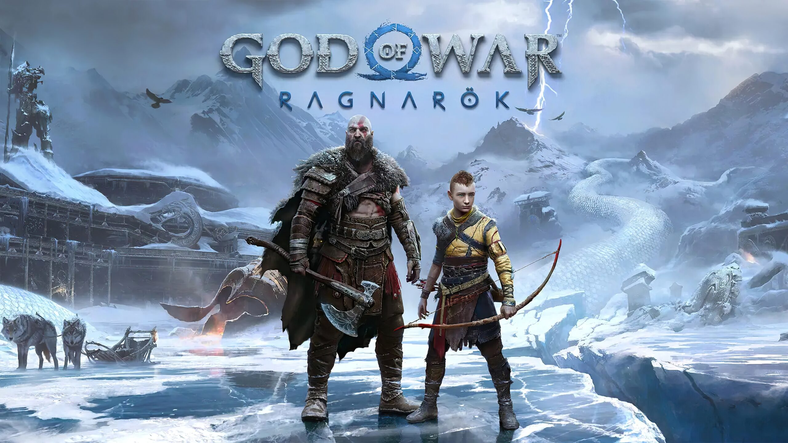

Red Dead Redemption 2 es un videojuego de acción-aventura desarrollado por Rockstar Games. La historia se sitúa en el Salvaje Oeste estadounidense en 1899 y sigue a Arthur Morgan, un forajido y miembro de la banda de Dutch Van der Linde. Después de un robo fallido en la ciudad de Blackwater, Arthur y su banda deben huir mientras son perseguidos por agentes federales y cazarrecompensas. A lo largo del juego, Arthur enfrenta desafíos tanto externos como internos, lidiando con la lealtad a su banda y sus propios principios morales. El juego ofrece un mundo abierto donde los jugadores pueden participar en diversas actividades como cazar, pescar, montar a caballo y enfrentarse en tiroteos. Además, las decisiones del jugador afectan la calificación de honor de Arthur, influyendo en cómo otros personajes reaccionan hacia él.

God of War: Ragnarök es un videojuego de acción y aventura desarrollado por Santa Monica Studio y publicado por Sony Interactive Entertainment. Es la secuela directa de God of War (2018) y sigue las aventuras de Kratos y su hijo Atreus. En esta entrega, Kratos y Atreus deben viajar a través de los Nueve Reinos en busca de respuestas mientras se preparan para el Ragnarök, la batalla profetizada que podría significar el fin del mundo. Durante su viaje, se enfrentarán a diversos enemigos, incluidos dioses nórdicos y criaturas míticas, mientras intentan detener el avance del Fimbulvetr, el invierno que precede al Ragnarök. La historia explora temas de paternidad, destino y la lucha interna de Kratos con su pasado violento, mientras Atreus busca entender su propia identidad y su lugar en el mundo.
Silent Hill 2 es un videojuego de terror psicológico desarrollado por Team Silent y publicado por Konami. La historia sigue a James Sunderland, quien recibe una carta de su difunta esposa, Mary, invitándolo a encontrarse con ella en el misterioso pueblo de Silent Hill, a pesar de que ella ha estado muerta por varios años. Al llegar a Silent Hill, James se encuentra con una serie de personajes extraños y perturbadores, incluyendo a una mujer llamada María, que se parece sorprendentemente a su esposa fallecida. A medida que avanza en su búsqueda, James debe enfrentar sus propios demonios internos y descubrir la verdad detrás de la carta y los oscuros secretos del pueblo. El juego es conocido por su atmósfera inquietante, su narrativa profunda y sus temas de culpa, pérdida y redención.